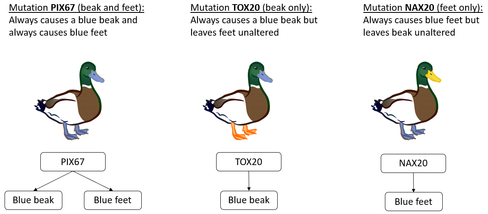
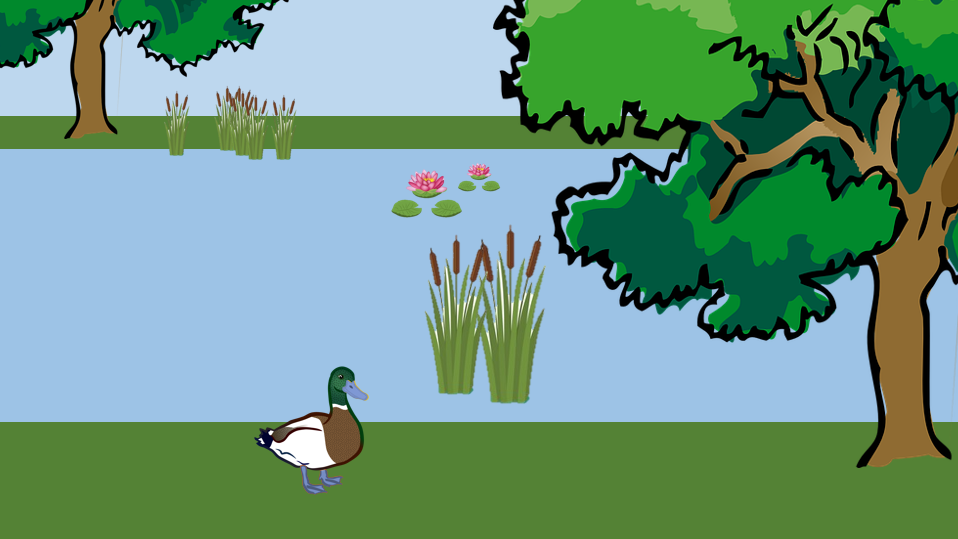
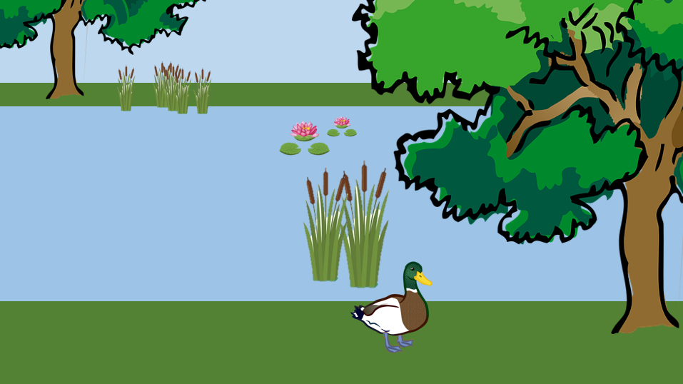
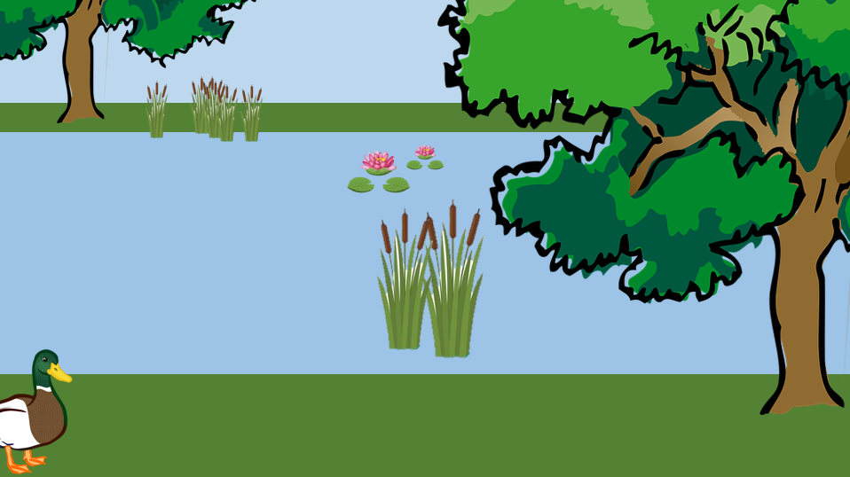

<!DOCTYPE html>
<html>
  <head>
    <title>Demo Exp</title>
    <script src="jspsych/jspsych.js"></script>
    <script src="jspsych/plugin-html-button-response.js"></script>
    <script src="jspsych/plugin-survey-multi-choice.js"></script>
    <script src="jspsych/plugin-survey-likert.js"></script>
    <script src="jspsych/plugin-html-slider-response.js"></script>
	<script src="jspsych/plugin-image-keyboard-response.js"></script>
	<script src="jspsych/plugin-html-keyboard-response.js"></script>
    <script src="jspsych/plugin-preload.js"></script>
    <script src="jspsych/plugin-survey-text.js"></script>
    <link href="jspsych/jspsych.css" rel="stylesheet" type="text/css" />
  </head>
  <body></body>
  <script>
  
// run study with ?demo=true at the end of url to have the demo mode


var jsPsych = initJsPsych({
  experiment_width: 1000,
  on_finish: function(){
    window.location = "https://app.prolific.co/submissions/complete?cc=136BDB5F"
  }
});


//var condition = CONDITION; 
var condition;

jsPsych.data.addProperties({condition: condition});

var subj_code;

function makeid(length) {
    var result           = '';
    var characters       = 'ABCDEFGHIJKLMNOPQRSTUVWXYZabcdefghijklmnopqrstuvwxyz0123456789';
    var charactersLength = characters.length;
    for ( var i = 0; i < length; i++ ) {
      result += characters.charAt(Math.floor(Math.random() * 
 charactersLength));
   }
   return result;
}

subj_code = makeid(12);

console.log(subj_code);

jsPsych.data.addProperties({subj_code: subj_code});


/* create timeline */
var timeline = [];

/* preload images */
var preload = {
  type: jsPsychPreload,
  images: ['img/uni_org_color_li.png', 
           'img/mutations_illu.png', 
           'img/rates_illu.png', 
           'img/probe_amb_beak.png',
           'img/probe_amb_feet.png', 
           'img/probe_cert_beak.png', 
           'img/probe_cert_feet.png', 
           'img/probe_parsim_beak_feet.png', 
           'img/probe_cert_none.png']
}
timeline.push(preload);

var styles = `
  p {
    text-align: justify
  }
  
`
var styleSheet = document.createElement("style")
styleSheet.type = "text/css"
styleSheet.innerText = styles
document.head.appendChild(styleSheet)


//////////////////////// experiment-specific variables

console.log(condition)

var i = 0;


var likert_scale; 
var likert_scale2;
var scale_orientation;

var scenario;

//////////////////////////////////////////////////////
/* Condition selection (just for offline demo) */

var select = {
  type: jsPsychSurveyText,
  questions: [
    {
		prompt: 
		`
		<p><b>This study is in DEMO mode. <br> Select a condition: type in a number between 1 and 4.</b></p>
    <p>
      1 and 2 have latent feature "beak"; 3 and 4 "feet"<br>
      1 and 3 have narrow cause on the left side of rating scale<br>
      2 and 4 have narrow cause on the right side of the rating scale
    </p>
		`, 
		placeholder: 'number between 1 and 4',
		required: true,
		name: 'CondSel',
	},
  ],
	on_finish: function(data){
	condition = data.response.CondSel,
	console.log(condition);
	} 
}
//timeline.push(select);


//////////////////////////////////////////////////////
/* Instructions ( all conditions)  */
var cond_selected = {
    type: jsPsychHtmlButtonResponse,
    stimulus: function () {
    return "You chose to see Condition "+condition;
		},
    choices: ['Continue']
};
timeline.push(select, cond_selected);


//////////////////////////////////////////////////////// scenario texts


scenario_intro = `
<p><i>Please read the following fictitious scenario thoroughly:</i></p>

<p>
  Biologists have noticed a peculiar phenomenon in the duck population of lake Caldazzo, a remote mountain lake in Northern Italy: 
  Some ducks of lake Caldazzo happen to have blue feet (instead of the typical orange), 
  others happen to have blue beaks (instead of the typical yellow), and yet others happen to have both blue feet and blue beaks.  
</p>

<p>It was soon found out that these abnormalities are caused by genetic mutations existing in some ducks of the duck population of lake Caldazzo.</p>

<p>Three mutations explain the observed color deviations:</p>

<p>
    - A mutation called <b>BkFt2</b>, leading to a <b>blue beak</b> and <b>blue feet</b>.<br>
    - A mutation called <b>Bk1</b>, leading only to a <b>blue beak</b>.<br>
    - And a mutation called <b>Ft1</b>, leading only to <b>blue feet</b>.<br>
</p>

<hr>

<p><i>A graphic summary of what these mutations do is given below. Please study this information carefully. 
  Your understanding of these mutations and their effects on duck color is crucial for the present study.</i></p>

<p></img></p>

<p><i>If you've studied the information thoroughly, please click "Continue" to learn more.</i></p>
`;


scenario_intro_2 = `
<p><i>Please read this additional information about the prevalence of the mutations:</i></p>

<p>
    The biologists managed to collect DNA samples from all the ducks of Lake Caldazzo.
    A laboratory analysis of these samples revealed that all three mutations occur equally often in the population. Each mutation occurs with a probability of 5%. 
    That means each duck has a 5% chance of having the BkFt2 mutation, a 5% chance of having the Bk1 mutation, and a 5% chance of having the Ft1 mutation. 
    Also, the mutations occur independently of each other, which means that having one of the mutations has no influence on the probability of having another mutation. 
    It is therefore also possible for a duck to end up with more than one mutation. 
</p>

<p><i>Please click "Continue" to proceed.</i></p>
`;


//////////////////////////////////////////////////////
/* Confirmations */
var confs = {
  type: jsPsychSurveyMultiChoice,
  questions: [
    {
      prompt: "This study works properly only on Desktop PCs and Laptops, and not on Smartphones or Tablets. Before you proceed, please confirm that you take part via Desktop PC or Laptop.", 
      name: 'DesktopConf', 
      options: ['1: I confirm', '2: I do not confirm'], 
      required: true
    }, 
    {
      prompt: "For the scientific utility of the results, it is very important that you provide complete and careful responses. How seriously will you take your participation in the study?", 
      name: 'AttentConf', 
      options: ['1: I will take it seriously', '2: I will not take it seriously'], 
      required: true
    }, 
  ],
  on_finish: function(data){
    if (condition == 1) {
        scale_orientation = "narrow_left";
        likert_scale = ["Definitely a Bk1 mutation (blue beak only)", " ", " ", " ", " ", "Both equally likely", " ", " ", " ", " ", "Definitely a BkFt2 mutation (blue beak and feet)"];
        latent_feature = "beak";
        probe = "probe_amb_beak.png";
      } else if (condition == 2) {
        scale_orientation = "narrow_right";
        likert_scale = ["Definitely a BkFt2 mutation (blue beak and feet)", " ", " ", " ", " ", "Both equally likely", " ", " ", " ", " ", "Definitely a Bk1 mutation (blue beak only)"];
        latent_feature = "beak";
        probe = "probe_amb_beak.png";
      } else if (condition == 3) {
        scale_orientation = "narrow_left";
        likert_scale = ["Definitely a Ft1 mutation (blue feet only)", " ", " ", " ", " ", "Both equally likely", " ", " ", " ", " ", "Definitely a BkFt2 mutation (blue beak and feet)"];
        latent_feature = "feet";
        probe = "probe_amb_feet.png";
      } else if (condition == 4) {
        scale_orientation = "narrow_right";
        likert_scale = ["Definitely a BkFt2 mutation (blue beak and feet)", " ", " ", " ", " ", "Both equally likely", " ", " ", " ", " ", "Definitely a Ft1 mutation (blue feet only)"];
        latent_feature = "feet";
        probe = "probe_amb_feet.png";
      };
	  jsPsych.data.addProperties({desktop_conf: data.response.DesktopConf, attent_conf: data.response.AttentConf, scale_orient: scale_orientation, latent_feature: latent_feature});
  },
  preamble: `
              <p></img></p>
              <p><b>Welcome to this experiment and thank you very much for your participation.</b></p>
              <p>Please note: This study contains memory and comprehension checks with which we aim to ensure that you correctly understood the central aspects of the study.</p>
            `
};
timeline.push(confs);


///////////////////////////////////
/* Scenario */

var intro_1 = {
  type: jsPsychHtmlButtonResponse,
  stimulus: 
  function() {return `
        `+scenario_intro+`
  `
  },
    choices: ['Continue']
}

var intro_2 = {
  type: jsPsychHtmlButtonResponse,
  stimulus: 
  function() {return `
        `+scenario_intro_2+`
  `
  },
    choices: ['Continue']
}

timeline.push(intro_1, intro_2);


//////////////////
/* instr */ 
var instr_check_1 = {
  type: jsPsychSurveyMultiChoice,
  name: 'instr_check',
  questions: [
    {
      prompt: "<b>What is correct about the effects of the three mutations?</b>", 
      options: ['1: All mutations (BkFt2, Bk1, Ft1) only cause one effect (either a blue beak or blue feet).', 
                '2: BkFt2 causes a blue beak and blue feet, Bk1 only a blue beak, and Ft1 only blue feet.',
                '3: All mutations (BkFt2, Bk1, Ft1) only cause a blue beak', 
                '4: All mutations (BkFt2, Bk1, Ft1) only cause blue feet.'],
      required: true,
      name: 'scope_check'
    },
    {
      prompt: "<b>What does it mean that the mutations occur independently of each other?</b>", 
      options: ['1: That means that having one mutation reduces the chances of having another mutation.', 
                '2: That means that having one mutation increases the chances of having another mutation.',
                '3: That means that having one mutation has no influence on the chance of having another mutation.'],
      required: true,
      name: 'independence_check'
    },
    {
      prompt: "<b>What is true about the frequency with which the three different mutations occur in the duck population?</b>", 
      options: ['1: All three mutations occur equally often (5%).', 
                '2: All three mutations occur equally often (95%).', 
                '3: All three mutations occur with different probabilities (5%, 10%, and 85%).', 
                '4: Two mutations occur with the same probability (5% and 5%), and a third occurs more often (20%).'],
      required: true,
      name: 'rate_check'
    },
  ],

  preamble: `
      <p><i>
        You have learned the relevant information about the duck population of Lake Caldazzo. 
        Before you can proceed to the next part of the experiment, 
        we need to ensure that you've understood the central aspects of the scenario. 
        Please answer the following comprehension-check questions. 
        You can only proceed once you've answered all check questions correctly. 
        If you answer any of the questions incorrectly, we'll show you the scenario description again.
      </i></p>
    `,
  on_finish: function(data){
    i ++;
    console.log("instr test rounds: "+i);
    if (data.response.scope_check == '2: BkFt2 causes a blue beak and blue feet, Bk1 only a blue beak, and Ft1 only blue feet.' &
        data.response.rate_check == '1: All three mutations occur equally often (5%).') {
        instr_check_1 = "correct";
    } else {
      instr_check_1 = "incorrect";
    };
    console.log("result instruction check: "+instr_check_1);
	  jsPsych.data.addProperties({instr_tests: i});
  },
};
timeline.push(instr_check_1);


likert_scale2 = ["5", "10", "15", "20", "25", "30", "35", "40", "45", "50", "55", "60", "65", "70", "75", "80", "85", "90", "95", "100"];

var instr_check_2 = {
  type: jsPsychSurveyLikert,
  questions: [
    {prompt: function() {return `
        <b>Imagine a perfectly reliable test that always finds a BkFt2 mutation in a duck if that mutation is present.
        If such a test were to be conducted in a fully representative group of 100 ducks, in how many of them would the test be expected to detect the presence of a BkFt2 mutation? </b>`}, 
    name: 'rate_check_bkft2', 
    labels: function () {return likert_scale2}
    },
    {prompt: function() {return `
        <b>Imagine a perfectly reliable test that always finds a Bk1 mutation in a duck if that mutation is present.
        If such a test were to be conducted in a fully representative group of 100 ducks, in how many of them would the test be expected to detect the presence of a Bk1 mutation? </b>`}, 
    name: 'rate_check_bk1', 
    labels: function () {return likert_scale2}
    },
    {prompt: function() {return `
        <b>Imagine a perfectly reliable test that always finds a Ft1 mutation in a duck if that mutation is present.
        If such a test were to be conducted in a fully representative group of 100 ducks, in how many of them would the test be expected to detect the presence of a Ft1 mutation? </b>`}, 
    name: 'rate_check_ft1', 
    labels: function () {return likert_scale2}
    },
  ],
  randomize_question_order: false,
  preamble: function() {
    return `                 
        <p><i>Please answer these additional comprehension check questions probing your understanding of each mutation's prevalence.</i></p>
    `
  },
  on_finish: function(data){
    if (data.response.rate_check_bkft2 == 0 &
        data.response.rate_check_bk1 == 0 & 
        data.response.rate_check_ft1 == 0) {
        instr_check_2 = "correct";
    } else {
      instr_check_2 = "incorrect";
    };
    console.log("choice bkft2: "+data.response.rate_check_bkft2);
    console.log("result instruction check: "+instr_check_2);
  },
};

timeline.push(instr_check_2);


// screen if instr check was failed 
var instr_check_failed = {
  type: jsPsychHtmlButtonResponse,
  stimulus: 
    `
    <p><b>Unfortunately, you did NOT answer all comprehension check questions correctly. We will therefore show you the instructions again.</b></p>
    
    <p>Please click the button below to read the instruction again and repeat the test.</p>
    `
    ,
    choices: ['Back to instructions']
}


var loop_node = {
    timeline: [instr_check_failed, intro_1, intro_2, instr_check_1, instr_check_2],
    loop_function: function(data){
        if(instr_check_1 == "incorrect" || instr_check_2 == "incorrect"){
            return true;
        } else {
            return false;
        }
    }
}

var if_node = {
    timeline: [loop_node],
    conditional_function: function(){
        if(instr_check_1 == "incorrect" || instr_check_2 == "incorrect" ){
            return true;
        } else {
            return false;
        }
    }
}
timeline.push(if_node); // note: the if_node evaluates the status of the instruction test variable and, given that it has value "incorrect", triggers the loop node


// screen if instr check was passed
var instr_check_passed = {
  type: jsPsychHtmlButtonResponse,
  stimulus: 
    `
    <p><b>You answered all comprehension check questions CORRECTLY and can proceed to the next part of the study.</b></p>
    
    <p>Please click "Continue" to proceed.</p>
    `
    ,
    choices: ['Continue']
}
timeline.push(instr_check_passed);


// instructing the decision situations
var intro_testphase = {
  type: jsPsychHtmlButtonResponse,
  stimulus: 
    `
    <p><i>Please read this new information:</i></p>
    <p>
      On the following screens, we'll show you some photographs of ducks that were taken by a "wildlife photo trap", 
      a camera the biologists' had installed at the lakeside that automatically took pictures of animals passing by. 
      For each duck you'll see on these photographs, we'll ask you to indicate the most probable explanation for their appearance. 
      We'd like you to answer these questions based on what you've learned about the mutations in the duck population of lake Caldazzo.
    </p>
    
    <p><i>Please click "Continue" to begin.</i></p>
    `
    ,
    choices: ['Continue']
}
timeline.push(intro_testphase);


////////////////////////////// Decision Situations

var LS_bias_probe = {
  type: jsPsychSurveyLikert,
  questions: [
    {prompt: function() {return `<b>Based on what you've learned, what is the more probable explanation for this duck's appearance?</b>`}, 
    name: 'LS_bias_probe_rating', 
    labels: function () {return likert_scale}},
  ],
  randomize_question_order: false,
  preamble: function() {
    return `                 
        <p><i><b>The camera trap that was installed at the lakeside took the following picture of a duck that passed by:</b></i></p>

        <p></img></p>
    `
  },
  on_finish: function(data){
	  jsPsych.data.addProperties({LS_bias_probe_rating: data.response.LS_bias_probe_rating, LS_bias_probe_stim: probe});
  },
};

timeline.push(LS_bias_probe);


/////////////////////////////////////// explanation
var explan = {
  type: jsPsychSurveyText,
  name: 'Free_explan',
  questions: [
    {prompt: `We'd now like to learn a little bit more about the rating you've just made. Please use the text field below to write a short explanation of your rating. Why did you give the rating you gave?`, 
    rows: 10, 
    columns: 100, 
    required: true,
    name: 'Explanation'
    },
  ],
  on_finish: function(data){
	  jsPsych.data.addProperties({explanation: data.response.Explanation});
  },
}
timeline.push(explan);


////// other probes 


// establish randomized order of selection options
var diag_options = ['This duck has a BkFt2 mutation (blue beak and blue feet).', 
                    'This duck has a Bk1 mutation (blue beak).', 
                    'This duck has a Ft1 mutation (blue feet).', 
                    'This duck has BkFt2 mutation (blue beak and blue feet) and a Bk1 mutation (blue beak).', 
                    'This duck has a BkFt2 mutation (blue beak and blue feet) and Ft1 mutation (blue feet).', 
                    'This duck has a Bk1 mutation (blue beak only) and a Ft1 mutation (blue feet only).', 
                    'This duck has no mutation affecting beak and feet color.'];

var diag_options_shuffled = jsPsych.randomization.repeat(diag_options, 1);


var bluefeet_bluebeak = {
  type: jsPsychSurveyMultiChoice,
  name: 'bluefeet_bluebeak',
  questions: [
    {
      prompt: `
      <p><i><b>The camera trap that was installed at the lakeside took the following picture of a duck that passed by:</b></i></p>
      
      <p></img></p>
      
      <p><b>Based on what you've learned, what is the most probable explanation for this duck's appearance?</b><p>
      `, 
      options: diag_options_shuffled, //this presents options in random order
      required: true,
      name: 'bluefeet_bluebeak_choice'
    },
  ],
  on_finish: function(data){
	  jsPsych.data.addProperties({bluefeet_bluebeak_choice: data.response.bluefeet_bluebeak_choice});
  },
};


var bluefeet = {
  type: jsPsychSurveyMultiChoice,
  name: 'bluefeet',
  questions: [
    {
      prompt: `
      <p><i><b>The camera trap that was installed at the lakeside took the following picture of a duck that passed by:</b></i></p>
      
      <p></img></p>
      
      <p><b>Based on what you've learned, what is the most probable explanation for this duck's appearance?</b><p>
      `, 
      options: diag_options_shuffled, //this presents options in random order
      required: true,
      name: 'bluefeet_choice'
    },
  ],
  on_finish: function(data){
	  jsPsych.data.addProperties({bluefeet_choice: data.response.bluefeet_choice});
  },
};


var bluebeak = {
  type: jsPsychSurveyMultiChoice,
  name: 'bluebeak',
  questions: [
    {
      prompt: `
      <p><i><b>The camera trap that was installed at the lakeside took the following picture of a duck that passed by:</b></i></p>
      
      <p></img></p>
      
      <p><b>Based on what you've learned, what is the most probable explanation for this duck's appearance?</b><p>
      `, 
      options: diag_options_shuffled, //this presents options in random order
      required: true,
      name: 'bluebeak_choice'
    },
  ],
  on_finish: function(data){
	  jsPsych.data.addProperties({bluebeak_choice: data.response.bluebeak_choice});
  },
};


var typical = {
  type: jsPsychSurveyMultiChoice,
  name: 'typical',
  questions: [
    {
      prompt: `
      <p><i><b>The camera trap that was installed at the lakeside took the following picture of a duck that passed by:</b></i></p>
      
      <p></img></p>
      
      <p><b>Based on what you've learned, what is the most probable explanation for this duck's appearance?</b><p>
      `, 
      options: diag_options_shuffled, //this presents options in random order
      required: true,
      name: 'typical_choice'
    },
  ],
  on_finish: function(data){
	  jsPsych.data.addProperties({typical_choice: data.response.typical_choice});
  },
};


var parsim_cases = [bluefeet_bluebeak, bluefeet, bluebeak, typical];

var parsim_cases_shuffled = jsPsych.randomization.repeat(parsim_cases, 1);


timeline.push(parsim_cases_shuffled[0], parsim_cases_shuffled[1], parsim_cases_shuffled[2], parsim_cases_shuffled[3]);


/////////////////////////////////////// demographics
var demogr_age = {
  type: jsPsychSurveyText,
  name: 'Age_query',
  questions: [
    {prompt: 'How old are you?', 
    placeholder: 'Age as a number', 
    required: true,
    name: 'Age'
    },
  ],
  on_finish: function(data){
	  jsPsych.data.addProperties({age: data.response.Age});
  },
}


var demogr_gender = {
  type: jsPsychSurveyMultiChoice,
  name: 'gender_query',
  questions: [
    {
      prompt: "Please indicate with which gender you identify.", 
      options: ['1: male', '2: female', '3: non-binary', '4: prefer not to say'],
      required: true,
      name: 'Gender'
    },
  ],
  on_finish: function(data){
	  jsPsych.data.addProperties({gender: data.response.Gender});
  },
};
timeline.push(demogr_age, demogr_gender);


/////////////////////////////////////// technical issues
var tech_issues = {
  type: jsPsychSurveyText,
  name: 'Tech_issue_query',
  questions: [
    {prompt: 'In the text field below you can report any errors that you came across during the study (e.g., technical issues, layout problems, spelling errors, errors in program logic and flow, etc.).', 
    rows: 10, 
    columns: 100, 
    required: false,
    name: 'Tech_issue_report'
    },
  ],
  on_finish: function(data){
	  jsPsych.data.addProperties({tech_issues: data.response.Tech_issue_report});
	  console.log(data.response.Tech_issue_report)
  },
}
timeline.push(tech_issues);

///////////////////////////////////// debriefing

var debriefing = {
  type: jsPsychHtmlButtonResponse,
  stimulus: 
    `
    </img>
    <p><b>Thank you for taking part in this study!</b></p>
  
    <p>The aim of this experiment is to find out more about how people form explanations. 
    If you are interested in further details or if you have any questions or comments concerning the experiment, 
    feel free to contact me (ANONYMIZED RESEARCHER) under <i>ANONYMIZED E-MAIL</i>
    
    <p>To ensure you receive your reward, please click the button below to return to the Prolific website:</p>
    `
    ,
    choices: ['Finish study']
};
timeline.push(debriefing);


/////////////////////////////////////////////////////////////////
/* start the experiment */
    jsPsych.run(timeline);

  
  </script>
</html>